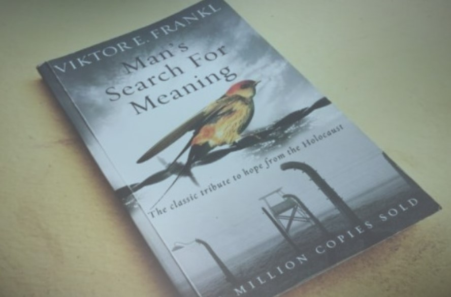
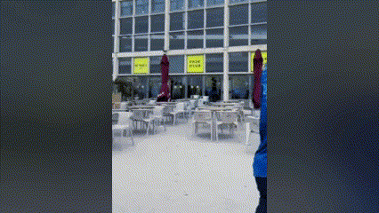

Ana Sousa
Hey I'm Ana, Portuguese in my mid-20s who fell in love with the Netherlands.
I'm a creative and adventurous soul, always seeking out new experiences and eager to delve into different topics/realities.
My natural empathy drives me to connect with others deeply, while my active nature keeps me constantly on the move, exploring and learning.
I'm passionate about both personal and professional growth, always striving to better myself in every aspect of life.
According to ChatGPT
"The artwork portrays a vibrant and joyful individual with a big smile and colorful background, suggesting a creative and positive personality. Elements like musical notes and European-style buildings indicate a love for music, art, and adventure. This person seems sociable and open-minded, enjoying travel and new experiences. Their creativity, positivity, and adaptability are valuable traits, complemented by strong interpersonal skills and cultural awareness, making them well-suited for dynamic environments that require innovative thinking and teamwork."
Interests & Hobbies
-
Psychology
My empathetic nature and appreciation for mental health guide my interest in books/podcasts/series that explore psychology, philosophy, and neurophysiology. My favorite series is "Undone", and I’m particularly inspired by Viktor Frankl’s book "Man's Search for Meaning".
 -
AR/VR & Robotics
Interest in 3D models, robotics, AR/VR and its combination with AI due to its enormous potential. I like doing small projects and read to learn about these fields and stay up to date.
-
Music & Dance
I enjoy listening to various types of music, especially when I can dance or sing along. Currently, I am self-teaching myself to play the ukulele and taking Lindy-hop dance classes.

-
Sports
I was a federated swimming athlete and later in athletics for years. I like to stay active and try new sports (Surf, Krav maga, Bouldering...)

Volunteer
-
TANKSTATION Cultureel Vulpunt
Multicultural foundation with sociocultural meeting place that organizes and promotes musical, artistic and cultural activities and prepares food from around the world.
-
Green Vibrations
Event organization & Bartender in a truly unique music festival with its own distinct identity with 3000 attendees and multiple stages in 10 years time.
Student Groups
-
IEEE Student Branch
Member of IEEE Embs. Organize workshops, lectures and collaborate in the development of EMBS projects together with other students.
-
Academic Music Group
Member of "Murchan Murchan", a group of engineering students who share a love of music.